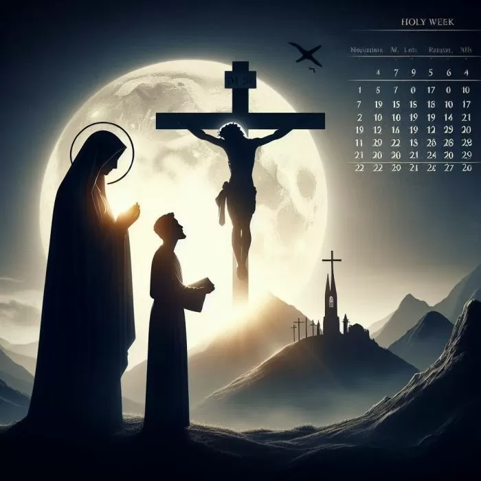

La Semana Santa, también conocida como Semana Mayor, es un período de ocho días que comienza con el Domingo de Ramos y culmina con el Domingo de Resurrección, la última semana de la Cuaresma.
Los días más importantes son el Triduo Pascual, es decir, el conjunto de tres días en los que tuvieron lugar la pasión, muerte y la resurrección de Jesucristo. Son el Jueves Santo, Viernes Santo, Sábado Santo y Domingo de Resurrección.
Los días más importantes son el Triduo Pascual, es decir, el conjunto de tres días en los que tuvieron lugar la pasión, muerte y la resurrección de Jesucristo. Son el Jueves Santo, Viernes Santo, Sábado Santo y Domingo de Resurrección.

Con el pasar de los años y la llegada de generaciones nuevas con otras perspectivas y lecturas sobre la religión, el origen del universo y libertad para elegir en qué creer y en que descreer, la Semana Santa fue tomando otro rumbo para ser una semana más de relación y vacaciones.